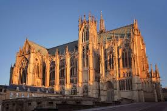
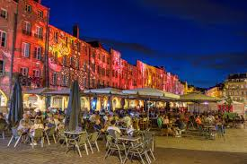
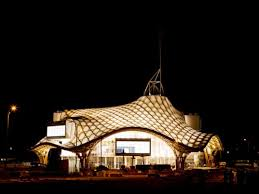
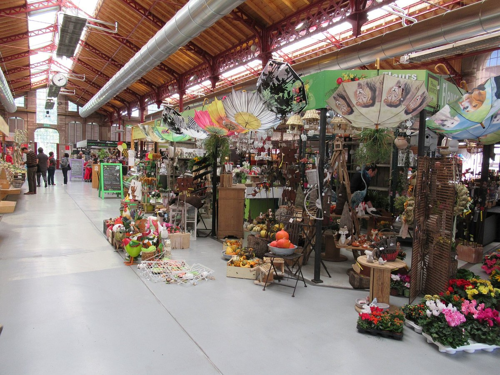
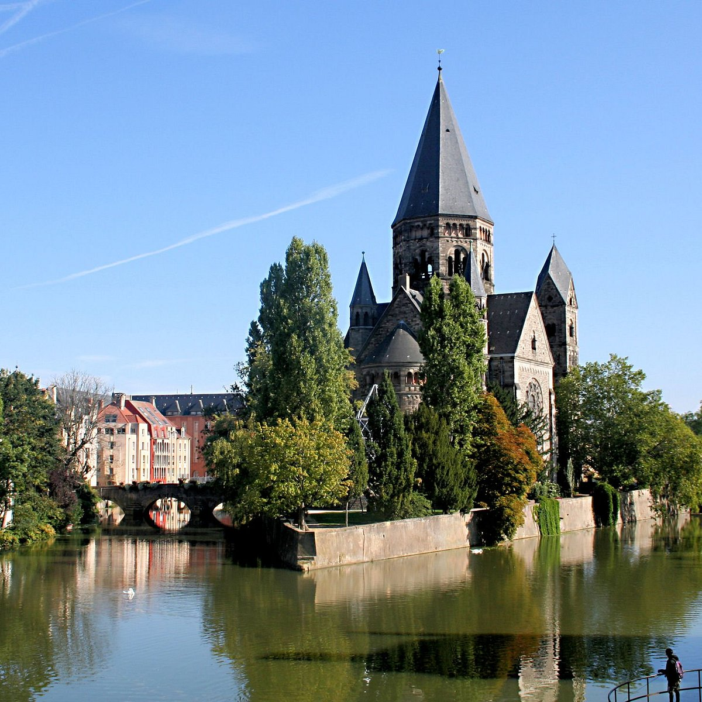
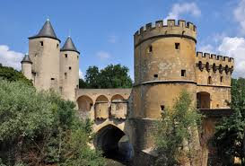
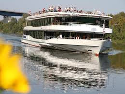
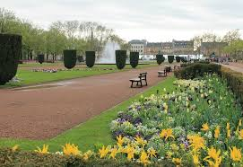
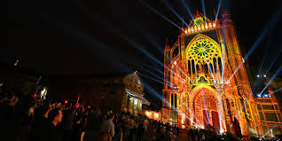

Metz is a historic yet modern city, offering a mix of medieval architecture, stunning stained-glass cathedrals, and contemporary art. Explore the Metz Cathedral, relax by the Moselle River, and visit the Centre Pompidou-Metz for a taste of modern culture. Don't miss the Place Saint-Louis, Porte des Allemands, and Temple Neuf for picture-perfect spots. Food lovers can enjoy local treats at the Covered Market, while nature lovers can explore Metz's green spaces. It's a hidden gem with one of the most beautiful cathedrals in Europe, charming old town streets, and a mix of history and modern art.
Famous Attractions
Metz Cathedral
The "Lantern of God"
- One of the most stunning Gothic cathedrals in France, built between the 13th and 16th centuries.
- Known for its huge stained-glass windows, some designed by famous artists like Marc Chagall.
- Nicknamed "Lantern of God" because it has the largest stained-glass surface in Europe (6,500 m²).
- Best for: Architecture lovers, history buffs, and breathtaking interior views.
Place Saint-Louis
A Medieval Square with Italian Charm
- A historic square with medieval arcades and Italian-style houses.
- Originally a financial center for Italian merchants in the Middle Ages.
- Now filled with cafés, shops, and a lively atmosphere, especially in the evenings.
- Best for: Sitting at a café and soaking in the medieval charm.
Centre Pompidou-Metz
A Modern Art Icon
- A striking contemporary art museum, designed by Shigeru Ban.
- Sister museum to the famous Centre Pompidou in Paris, showcasing modern and contemporary art.
- Features rotating exhibitions with paintings, sculptures, and digital art.
- Has a unique wave-shaped roof inspired by a Chinese hat.
- Best for: Art lovers and those looking for a contrast to Metz's historical sites.
The Old Town & Covered Market
Local Gastronomy
- Metz's historic center is filled with narrow streets, hidden courtyards, and charming squares.
- Marché Couvert (Covered Market) is a lively place to try local specialties like:
- Quiche Lorraine (originating from this region!).
- Miran, a local cheese.
- Macarons de Boulay, Metz's unique version of the famous dessert.
- Best for: Food lovers and souvenir hunters.
Temple Neuf
A Fairytale-like Church on the River
- A picturesque Protestant church built on an island in the Moselle River
- Built in Romanesque Revival style in the early 20th century
- Creates a stunning reflection on the water, perfect for photographs
- Best for: Photographers and romantic views, especially at sunset
Porte des Allemands
A Medieval City Gate
- A 13th-century fortified gate that once protected Metz from invaders.
- Looks like a mini-castle, with stone towers and bridges over the river.
- Now open for visits, with stunning views of the Moselle River.
- Best for: History lovers and medieval architecture fans.
Moselle River Walks & Boat Tours
- Metz is built around the Moselle River, offering scenic riverside walks and boat rides.
- The Promenade des Remparts is a great way to see the city's historic walls.
- Rent a boat or take a cruise for a relaxing view of Metz from the water.
- Best for: Couples, families, and those looking to unwind.
Esplanade & Jardin de l'Esplanade
Green Oasis in the City
- A beautiful park with fountains, flowers, and a view of the Moselle River.
- Popular for picnics, relaxing, and enjoying open-air concerts in summer.
- Best for: A peaceful break from sightseeing.
Festivals & Events in Metz
- Mirabelle Plum Festival (August) – Celebrating the local Mirabelle plum with food, concerts, and fireworks.
- Metz Christmas Market (November–December) – One of the largest Christmas markets in France, with magical lights and mulled wine.
- Constellations de Metz (Summer) –A digital art and light festival that illuminates city landmarks.
Day Trips from Metz
Nancy
A beautiful city with the stunning Place Stanislas, a UNESCO World Heritage site. (45 min)
Verdun
A historic town famous for World War I battlefields and memorials. (1h)
Luxembourg City
A great international day trip to see another small European country. (1h15)
Strasbourg
A mix of French and German culture, famous for its half-timbered houses and Christmas markets. (1h30)
Best Time to Visit Metz
Spring (April–June)
Best for outdoor sightseeing, blooming gardens, and festivals.
Summer (July–August)
Lively atmosphere with open-air events and night markets.
Autumn (September–October)
Perfect for food lovers (Mirabelle plums and wine season).
Winter (November–December)
Magical Christmas markets and festive decorations.